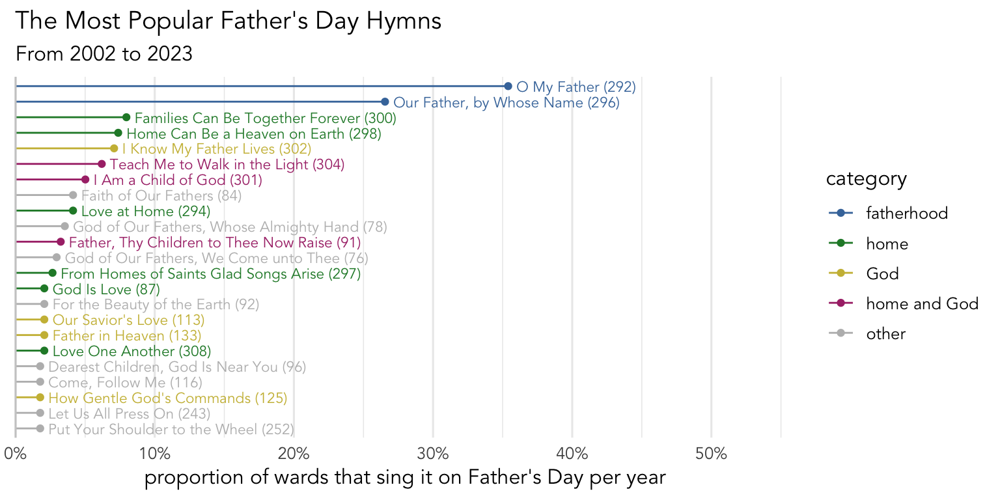
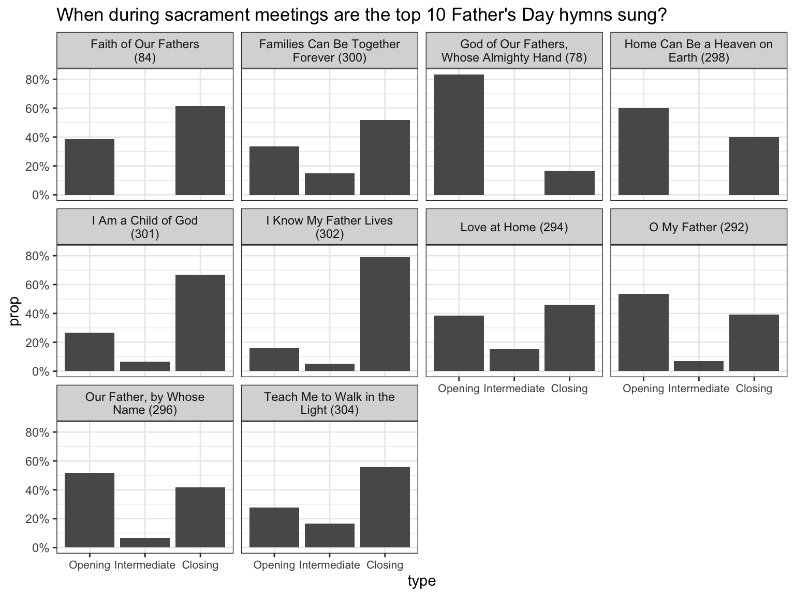
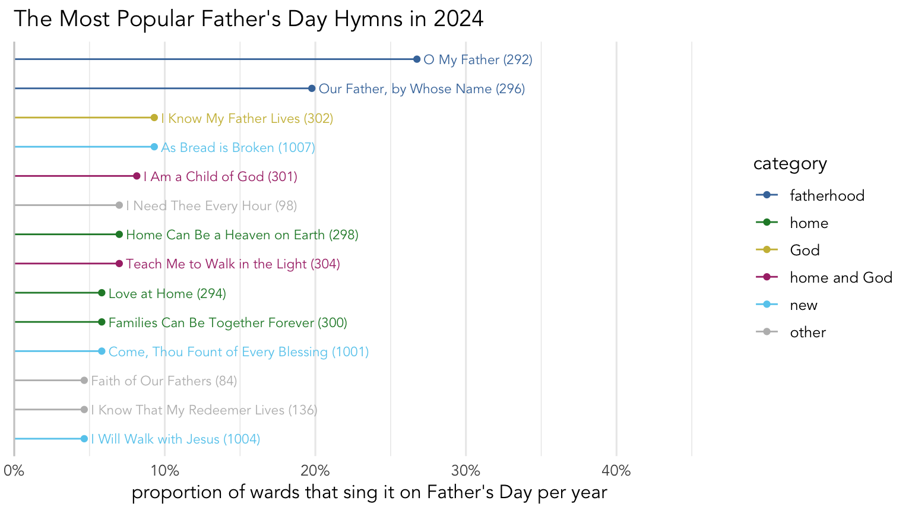

What hymns are sung around Father’s Day?
holidays
frequency
It’s Father’s Day here in the United States. Last month, I did an analysis of what hymns are typically sung on Mother’s Day. This post will be structured similarly, except it’ll focus on the third Sunday in June in wards located in the United States. In my dataset, I currently have information from 420 sacrament meetings and 250 wards from 2002 to 2024, so this should be pretty representative of what’s going on more broadly.
Note that the majority of this post will focus on Father’s Day before 2024. The addition of the new hymns has changed the results a small amount. I’ll address those changes towards the end of this post.
What are the Father’s Day hymns?
Looking through the topics index at the back of the hymnal, several categories of hymns could be considered appropriate to choose from for Father’s Day. Of course, the Fatherhood category is best, and list three hymns,
However, there are other categories that could be appropriate, such as “Home”, “God the Father”, “Brotherhood”, “Priesthood”, “Leadership”, “Children”, and “Example”. Looking through what hymns are actually sung on Father’s Day (we’ll get to that in a second), only “Home” and “God the Father”, so we’ll ignore the rest. Each of the “Home” and “God the Father” categories is pretty large, but the only overlapping hymns between them are
The following figure plots the most common hymns sung around Father’s Day in my dataset before 2024. The hymns are color-coded based on their category in the topics index.
It’s clear from this plot that there are two Father’s Day hymns that stand out as being the most common:
However, a smaller proportion of wards sing other hymns, and they’ve been color-coded based on broad topic. The green hymns are under the “Home” entry of the Topics index, and those seem to be quite common. The yellow hymns are ones that are in the “God the Father” category. The pink ones are those that are in both “Home” and “God the Father.” So, those categories seem to be the most common overall.
It is worth looking at a few of the gray hymns, which belong to none of those three categories. They include hymns with the word Father in the title, like
We also see some work-related hymns like
Finally, we can look at when during sacrament meeting these most popular hymns are sung. Figure 1 shows the data for the top 10 Father’s Day hymns. Most hymns are roughly evenly split between opening and closing hymns with a few exceptions:

Everything I’ve said up to this point has been a summary of data prior to 2024. However, we recently got some new hymns. So, how did these new hymns change what Father’s Day looked like in 2024? The following plot is the same format as above except it only shows the 2024 data and I’ve added a new color for the new hymns.

Here, you can see that there were a handful of new hymns that were pretty popular, particularly
Otherwise, the results look similar. The “fatherhood” hymns are still the most common by far. The “home” hymns were down a little bit and
So that’s it for Father’s Day!